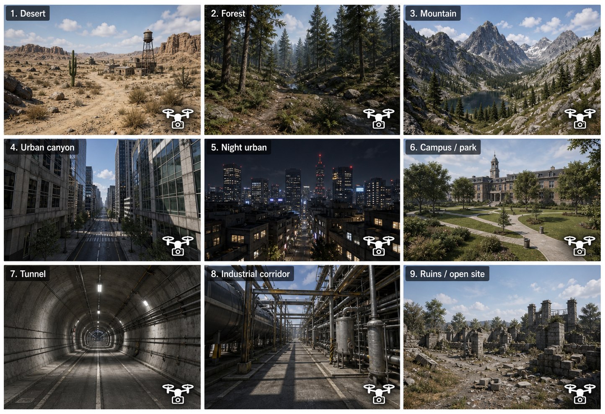
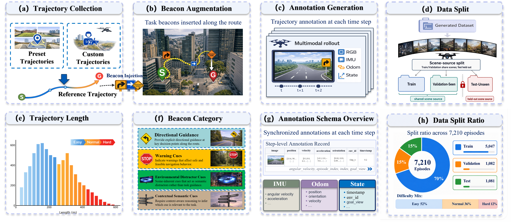
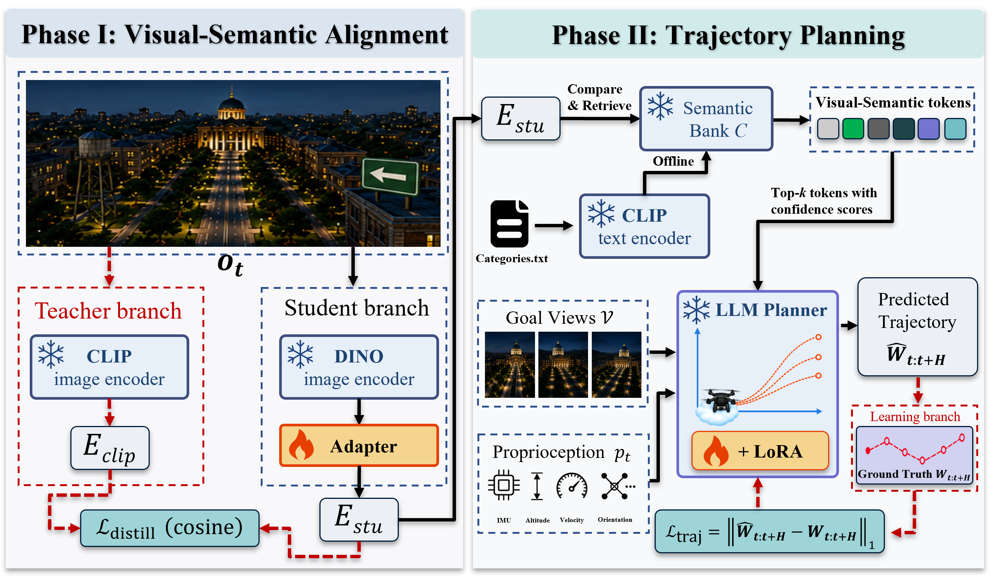
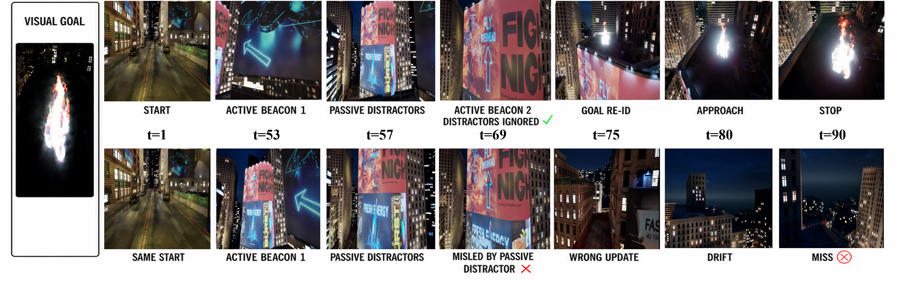
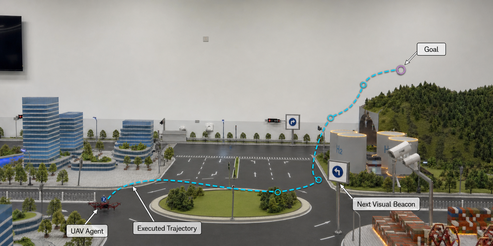

Abstract
Vision-and-Language Navigation (VLN) enables embodied agents to follow natural-language instructions. However, route-level instructions commonly encode spatial priors, such as orientation, distance, and layout, that are not explicitly available from onboard sensing at deployment in open, GPS-denied environments. Benchmark performance under such interfaces therefore jointly reflects visual navigation ability and the use of instruction-derived route structure, making perception-driven navigation difficult to isolate. To separate these factors, we propose Vision-Only Long-Horizon Navigation (VoLN), a task formulation in which goal views specify the destination and route-relevant guidance is presented as locally observable in-scene semantic beacons. During execution, the interface provides no externally supplied episode-level text, global maps, GPS, or shortest-path information. We instantiate VoLN for aerial navigation and introduce VoLN-UAV, a benchmark that combines long-horizon goal-directed flight, continuous 3D motion, large viewpoint changes, and context-dependent beacon selection. As an initial method, VoLN-MLLM aligns self-supervised visual features with a structured semantic space and predicts short-horizon waypoint segments from observation history, goal views, retrieved visual-semantic tokens, and proprioception. On Test-Unseen, it achieves success rates of 7.4%, 4.5%, and 1.8% on Easy, Normal, and Hard episodes, respectively. These results provide an initial evaluation of VoLN and reveal substantial remaining challenges in long-horizon evidence integration, cross-view goal matching, and closed-loop stability.
VoLN-UAV Benchmark
A scene-disjoint benchmark for long-horizon UAV navigation across diverse natural and built environments.


Difficulty: Easy < 300 m · Normal 300–450 m · Hard ≥ 450 m, measured by reference path length.
VoLN-MLLM
Visual-semantic alignment followed by closed-loop trajectory planning.

Implementation. VoLN-MLLM uses a frozen DINOv3 ViT-B/16 visual backbone and a frozen Vicuna-7B-v1.5 planner. Top-8 category tokens are retrieved from the fixed semantic bank, rank-16 LoRA modules adapt Vicuna's attention and feed-forward projections, and learned heads output eight 3D waypoints plus a stop signal.
Benchmark Results
Test-Unseen performance under the unified visual-goal observation and waypoint-action protocol.
| Method | NE (m) ↓ | SR (%) ↑ | OSR (%) ↑ | nDTW (%) ↑ | SPL (%) ↑ |
|---|---|---|---|---|---|
| Random | 270.1 / 310.4 / 395.2 | 0.4 / 0.0 / 0.0 | 1.4 / 0.6 / 0.2 | 30.1 / 22.7 / 15.1 | 0.3 / 0.0 / 0.0 |
| Seq2Seq-VG | 208.6 / 254.8 / 309.9 | 1.0 / 0.4 / 0.1 | 4.8 / 2.5 / 0.9 | 28.9 / 21.4 / 13.0 | 0.7 / 0.3 / 0.0 |
| CMA-VG | 174.5 / 216.8 / 266.1 | 1.6 / 0.8 / 0.2 | 6.5 / 3.9 / 1.7 | 33.2 / 26.4 / 18.5 | 1.1 / 0.6 / 0.1 |
| LAG-VG | 122.4 / 158.3 / 206.7 | 2.3 / 1.2 / 0.4 | 6.4 / 3.8 / 1.7 | 28.1 / 20.5 / 14.0 | 1.5 / 0.7 / 0.2 |
| VoLN-MLLM | 97.1 / 131.4 / 176.8 | 7.4 / 4.5 / 1.8 | 14.6 / 10.1 / 4.5 | 53.1 / 41.2 / 28.0 | 5.7 / 3.2 / 1.3 |
Values are ordered as Easy / Normal / Hard and follow the current manuscript.
Qualitative Analysis
Active-beacon selection and passive-distractor rejection determine whether local decisions remain aligned with the route.

Simulation and Real-World Demonstrations
The physical testbed is a preliminary qualitative feasibility study rather than a large-scale quantitative real-world benchmark.

Resources
The navigation dataset provides sharded trajectories, RGB observations, annotations, and metadata. The simulator package provides the Unreal Engine and AirSim environments for online evaluation. Training, benchmark construction, VoLN-adapted baselines, and evaluation scripts are available in the code repository.
BibTeX
Preprint citation; the arXiv identifier will be added after registration.
@misc{lou2026voln,
title = {VoLN: Vision-Only Long-Horizon Navigation---Paradigm, Benchmark, and Method},
author = {Lou, Jiabin and Wang, Haopeng and Wang, Yuanshuai and Liu, Xinyu and Lv, Xuxin and Guo, Yuxin and Huang, Lei and Shi, Rongye and Wu, Wenjun},
year = {2026},
note = {Preprint},
url = {https://github.com/Admire-ljb/VoLN-UAV}
}